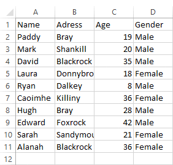
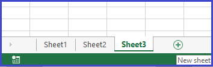

Step 1: Highlighting your data Highlight all of the data in your spreadsheet. This is done by clicking on the first cell ('A1'), and then dragging the mouse over all cells which contain data. This is demonstrated below.
Alternatively, you could click on any cell in your spreadsheet and then press CTRL + A.
Step 2: New Search To create a new search you must enter the conditions you wish to use in your search. First, you will enter the letter of the column you wish to search in. Followed by the criteria you wish to search for in that column. You can add multiple columns, and multiple criterion per column, to your search.
For example:

If you wanted to search this spreadsheet for all males who are 20 years of age. You would first enter 'C' to search in the Age column, then you would enter '20' as the criteria for column C. You would then enter 'D' to search in the Gender column, then you would enter 'Male' as the criteria for column D.
Step 3: Result location Before the results of your search can be displayed, you need to open a new empty sheet. This can be done by clicking on the '+' symbol below your sheet. You must then enter the name of the new sheet, eg. 'Sheet2' or 'Sheet3'. 
Step 4: Save Search You can name and save each new search. It will then appear in your list of saved searches which can be selected from the Home page.